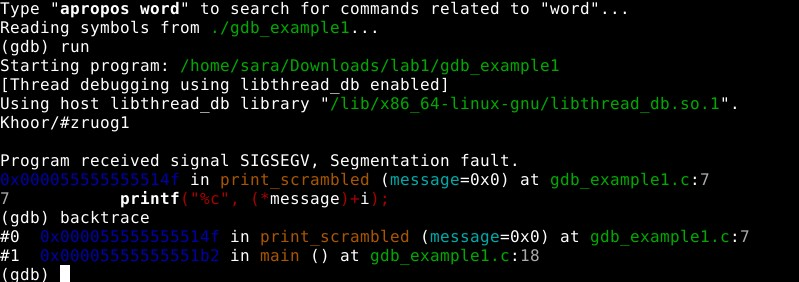
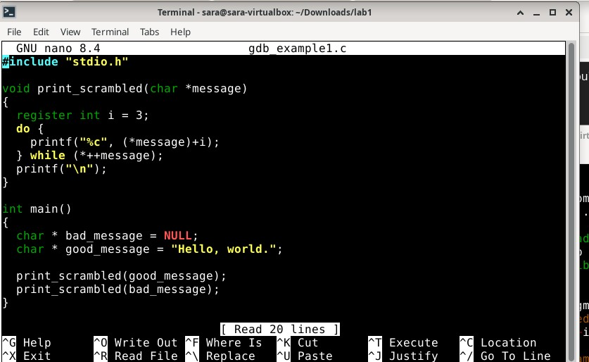
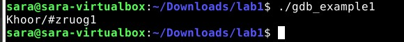

a
Latasin ensimmäiseksi tehtävän zip kansion ja purin sen kansion.

Kokeilin heti ajaa ohjelman ja se antoi minulle ilmoituksen "segmentation fault".

Segmentation fault virhe ilmenee kun ohjelmisto yrittää päästä käsiksi muistiin johon sillä ei ole oikeuksia.
Tämä tiedon luin "geeksforgeeks" sivulta.
Seuraavaksi käytin gdp ohjelmaa löytääkseni virheen.
Latasin ohjelman komennolla sudo apt install gdb. Seuraavaksi ajoin ohjelman uudestaan.
Annoin komennon "run" ja sillä komennolla ohjelma pysähtyi segmentation fault virheellä.
Seuraavaksi annoin komennon "backtrace" jotta itse ongelma kohta löytyisi.
Sain tämän näkymän:
Kuvasta näkyy virheen olevan rivillä 18, joka on main lohkossa.
Seuraavaksi avasin koodin nanolla:
Virhe on riveillä "char * bad message = NULL; ja print_scrambled(bad_message);
Koska vikana on se että "NULL" ei osoita minnekään, ratkaisin ongelman yksinkertaisesti poistamalla nuo rivit.
Tässä on korjattu versio, josta on poistettu virheelliset rivit.
Lähteet
Geeksforgeeks https://www.geeksforgeeks.org/cpp/segmentation-fault-c-cpp/